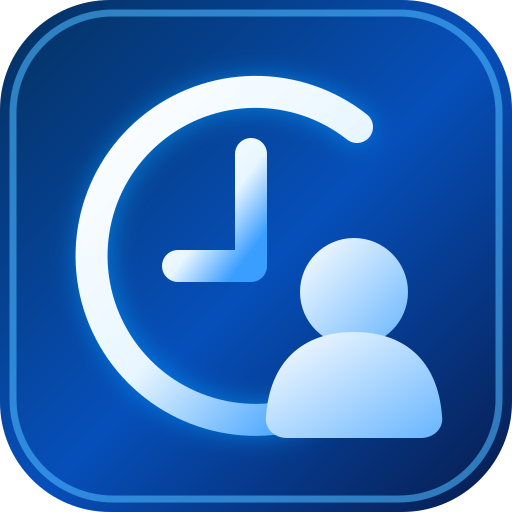

<!doctype html><html lang="pt-BR"><meta charset="utf-8"><meta name="viewport" content="width=device-width,initial-scale=1"><meta name="theme-color" content="#16477b"><meta name="application-name" content="Ponto Digital"><meta name="apple-mobile-web-app-capable" content="yes"><meta name="apple-mobile-web-app-title" content="Ponto Digital"><link rel="manifest" href="./manifest.webmanifest"><link rel="icon" type="image/svg+xml" href="./icon.svg"><title>Ponto Digital</title><script>try{const hash=new URLSearchParams(location.hash.slice(1));if(!hash.has('access_token')&&JSON.parse(localStorage.getItem('ponto-digital-session-v1')||'null')?.refresh_token)document.documentElement.classList.add('ponto-restoring')}catch{}</script><script>/* Proteção contra tela inicial travada em conexões lentas ou restauração pendente. */setTimeout(()=>{if(!document.documentElement.classList.contains('ponto-restoring'))return;document.documentElement.classList.remove('ponto-restoring');const status=document.getElementById('message');if(status)status.textContent='A recuperação da sessão demorou. Verifique a conexão e tente entrar novamente.';},12000)</script><style>body{font:16px system-ui;background:#eef3f9;margin:0;color:#173d67}header{background:#16477b;color:white;padding:22px;text-align:center}main{max-width:460px;background:white;border-radius:14px;padding:24px;margin:28px auto}input,button{display:block;width:100%;box-sizing:border-box;padding:13px;margin:10px 0;border-radius:8px;font:inherit}button{background:#1465ac;color:white;border:0}.row{padding:12px;border-bottom:1px solid #ddd}.error{color:#b42318}header h1{font-size:clamp(1.7rem,6vw,2.25rem);margin:0 0 5px}header{padding:25px 18px 28px}header .subtitle{font-size:.92rem;opacity:.86}body{background:#f2f6fb;color:#173454}main{box-sizing:border-box;width:calc(100% - 28px);max-width:520px;margin:20px auto;padding:24px 20px;border:1px solid #dbe6f2;box-shadow:0 8px 26px #153e6510;border-radius:20px}main h2{font-size:1.4rem;margin:0 0 22px}.row{display:flex;justify-content:space-between;align-items:center;gap:12px;padding:16px 2px;font-size:.98rem}.row .status{font-weight:700;color:#936a16;background:#fff5d9;border-radius:20px;padding:5px 10px;font-size:.82rem}.row .status.done{color:#17613c;background:#e4f7ed}button{min-height:50px;font-weight:650;background:#0866dc;border-radius:12px;cursor:pointer}button:disabled{opacity:.6;cursor:not-allowed}button#history,button#help{background:white;border:1px solid #c6d8ed;color:#14518d}button#logout{background:#f1f5fa;color:#445d76}#message:not(:empty){background:#fff2ef;color:#a3291f;border-radius:10px;padding:12px;font-size:.88rem;overflow-wrap:anywhere}input{border:1px solid #bdcee0;background:white} @media(min-width:700px){main{margin:30px auto}} .day-heading{margin-bottom:20px}.day-heading h2{margin:5px 0 6px}.day-heading p{margin:0;color:#637991;font-size:.9rem;text-transform:capitalize}.eyebrow{font-size:.7rem;font-weight:800;letter-spacing:.12em;color:#0866dc}.punch-list{display:grid;gap:10px;margin:20px 0 22px}.punch-row{border:1px solid #dae5f0;border-radius:13px;background:#f8fbff;display:flex;justify-content:space-between;align-items:center;gap:10px;padding:17px 13px}.punch-label{font-size:.91rem;font-weight:650}.punch-status{font-size:.81rem;font-weight:750;border-radius:20px;padding:7px 10px;white-space:nowrap}.punch-status.pending{background:#fff3d8;color:#916113}.punch-status.done{background:#dcf6e9;color:#176b44}.secondary-actions{display:grid;grid-template-columns:1fr 1fr;gap:10px}.secondary-actions button{font-size:.91rem;padding:10px 4px}#logout{margin-top:8px}#mark{box-shadow:0 4px 10px #0866dc25}@media(max-width:370px){.punch-row{padding:14px 9px}.punch-label{font-size:.82rem}.punch-status{font-size:.75rem;padding:6px 8px}} .history-filters{margin:16px 0}.history-filters label{font-weight:700;font-size:.9rem}.history-filters input{margin:6px 0}.history-summary{font-size:.85rem;color:#64748b;margin:12px 0}.history-days{display:grid;gap:12px;margin:14px 0 22px}.history-day{border:1px solid #dbe6f2;border-radius:15px;background:#f8fbff;overflow:hidden}.history-day summary{cursor:pointer;padding:16px;display:flex;justify-content:space-between;gap:12px;align-items:center}.history-day summary strong{text-transform:capitalize;font-size:.9rem}.history-day summary span{font-size:.75rem;color:#58718a;white-space:nowrap}.history-record{padding:13px 16px;border-top:1px solid #e0e9f3;display:flex;justify-content:space-between;gap:8px;font-size:.88rem}.history-time{color:#176b44;white-space:nowrap}.history-pending{color:#916113}.history-total{padding:13px 16px;background:#eaf3ff;color:#14518d;font-weight:700;font-size:.9rem}.history-empty{padding:20px;text-align:center;color:#64748b}body:has(.history-screen){background:#f4f8fe;color:#0b2046}body:has(.history-screen)>header{display:none}main.history-screen{width:100%;max-width:980px;margin:0 auto;padding:0 18px 35px;border:0;border-radius:0;box-shadow:none;background:transparent;min-height:100vh}.history-toolbar{display:flex;align-items:center;gap:12px;margin:0 -18px 14px;padding:25px 18px;background:linear-gradient(110deg,#084783,#063260);color:white}.history-toolbar button{width:auto;min-height:42px;margin:0;background:transparent;border:1px solid #ffffff9c;padding:8px 12px;white-space:nowrap}.history-toolbar #hist-back{font-size:32px;border:0;padding:0 6px}.history-brand{flex:1;min-width:0;display:flex;flex-direction:column}.history-brand strong{font-size:clamp(19px,4vw,28px)}.history-brand small{color:#d0e1f6}.history-tabs{display:grid;grid-template-columns:repeat(3,minmax(0,1fr));gap:9px}.history-tabs button{margin:0;background:#f5f9ff;color:#0c3267;border:1px solid #b8cde3;font-size:clamp(11px,2.8vw,16px);padding:9px 3px;min-height:47px}.history-tabs button.active{background:#0864d0;color:white;border-color:#0864d0}.history-navigation{display:flex;align-items:center;justify-content:space-between;gap:10px;padding:12px 0}.history-navigation strong{font-size:clamp(17px,4vw,24px);text-transform:capitalize;color:#0a1b3d}.history-navigation button{width:38px;min-height:40px;margin:0;background:transparent;color:#0a2858;font-size:32px;padding:0}.history-list-card{display:flex;align-items:center;gap:12px;width:100%;min-height:77px;padding:9px 12px;margin:8px 0;border:1px solid #d0dceb;border-radius:13px;background:#fff;color:#0b2046;text-align:left}.history-list-card.selected{background:#d9eafe;border-color:#bcd6f7}.history-datebox{display:flex;flex-direction:column;align-items:center;justify-content:center;background:#e6f2ff;border-radius:12px;width:53px;min-width:53px;height:58px}.history-datebox small{font-size:11px;font-weight:700}.history-datebox strong{font-size:23px}.history-list-info{display:flex;flex:1;min-width:0;flex-direction:column;gap:4px}.history-list-info strong{font-size:clamp(12px,3.3vw,17px);text-transform:capitalize}.history-list-info small{font-size:13px;color:#4e6076}.history-hour{background:#def5e7;color:#11652d;padding:9px;border-radius:12px;white-space:nowrap;font-weight:800}.history-hour.incomplete,.selected .history-hour{background:#c8e1fc;color:#1154a3}.history-chevron{font-size:24px}.history-detail-card{margin:18px 0 12px;padding:14px;background:white;border:1px solid #d3e0ed;border-radius:16px;box-shadow:0 6px 18px #153e6510}.history-detail-head{display:flex;justify-content:space-between;align-items:center;gap:10px;padding:4px 0 14px}.history-detail-head>div{display:flex;flex-direction:column;gap:6px}.history-detail-head strong{text-transform:capitalize}.history-detail-head small{color:#56677d}.history-detail-row{display:flex;align-items:center;gap:10px;padding:13px 2px;border-top:1px solid #e1e7f0}.history-kind-icon{display:grid;place-items:center;width:34px;height:34px;min-width:34px;background:#e5f2ff;color:#0b64c2;border-radius:10px;font-size:23px}.history-kind-icon.entry{background:#e2f6e8;color:green}.history-kind-icon.lunch_out{background:#fff0dc;color:#d97600}.history-kind-icon.exit{background:#ffe6e6;color:#c82222}.history-kind-label{flex:1;font-size:clamp(12px,3vw,16px)}.history-kind-time{white-space:nowrap;font-size:clamp(11px,3vw,16px)}.history-ok{color:#07801d;font-size:12px;white-space:nowrap}.history-wait{color:#9a6b10;font-size:12px}.history-note{padding:12px;background:#fff5d9;border-radius:12px;font-size:13px}.history-stats{display:grid;grid-template-columns:repeat(3,minmax(0,1fr));gap:5px;background:#e7f1ff;padding:16px 10px;border-radius:16px;margin:15px 0}.history-stat{display:flex;flex-direction:column;gap:7px;padding:0 9px;border-right:1px solid #afc3da}.history-stat:last-child{border:0}.history-stat small{font-size:12px}.history-stat strong{font-size:clamp(16px,4vw,24px)}.history-mode-note{color:#496784;margin:12px 0}.history-screen #hist-picker[hidden]{display:none}@media(max-width:430px){.history-toolbar{gap:6px}.history-toolbar button{padding:6px}.history-toolbar #hist-period{font-size:12px}.history-kind-icon{width:28px;min-width:28px;height:30px}.history-detail-row{gap:5px}.history-ok,.history-wait{font-size:10px}.history-list-card{gap:7px;padding:8px}.history-hour{padding:7px;font-size:12px}}body:has(.clock-home)>header{display:none}main.clock-home{max-width:980px;width:100%;margin:0 auto;min-height:100vh;background:#f5f9ff;border:0;box-shadow:none;border-radius:0;padding:0 16px 30px;color:#0b2147}.clock-profile{margin:0 -16px 16px;background:linear-gradient(120deg,#07539b,#06346d);color:white;display:flex;align-items:center;gap:14px;padding:24px 18px;border-radius:0 0 22px 22px}.clock-profile strong{display:block;font-size:clamp(22px,5vw,31px)}.clock-profile small{display:block;color:#d7e8ff}.clock-avatar{display:grid;place-items:center;font-size:34px;width:56px;height:56px;background:#1979e6;border-radius:15px}.clock-datebar{display:flex;justify-content:space-between;align-items:center;gap:12px;background:#084584;color:white;border-radius:14px;padding:18px 15px;margin:14px 0;font-weight:700}.clock-datebar span{text-transform:capitalize;font-size:clamp(12px,3.3vw,17px)}.clock-datebar strong{font-size:clamp(18px,5vw,29px);white-space:nowrap}.clock-frequency,.clock-rows,.clock-totals{background:white;border:1px solid #d4e1f1;border-radius:17px;box-shadow:0 5px 16px #0c386014}.clock-frequency{overflow:hidden}.clock-frequency h2{background:#eaf3ff;font-size:clamp(15px,3.6vw,20px);margin:0;padding:14px}.clock-frequency h2 small{font-size:.83em}.clock-metrics{display:grid;grid-template-columns:repeat(5,minmax(0,1fr));gap:6px;padding:10px}.metric{border-radius:12px;display:flex;flex-direction:column;align-items:center;justify-content:space-between;text-align:center;gap:7px;padding:10px 3px;min-width:0}.metric span{font-size:25px}.metric small{font-size:clamp(9px,2.2vw,13px);font-weight:650;line-height:1.15;min-height:32px}.metric strong{font-size:clamp(14px,3.5vw,24px);white-space:nowrap}.metric.green{background:#e0f6e7;color:#0b7128}.metric.red{background:#ffeaed;color:#bc1923}.metric.amber{background:#fff2d9;color:#ad6b00}.metric.purple{background:#eee8ff;color:#442397}.metric.cyan{background:#e1f6ff;color:#075f9c}.frequency-note{font-size:11px;color:#62768b;padding:0 12px 10px;margin:0}.clock-section-title{display:flex;align-items:center;justify-content:space-between;gap:8px;margin:22px 0 10px}.clock-section-title h2{font-size:clamp(18px,4vw,24px);margin:0}.clock-section-title span{font-size:12px;color:#116b2e;background:#ddf5e4;border-radius:22px;padding:8px;white-space:nowrap}.clock-rows{padding:8px 12px}.clock-row{display:flex;align-items:center;gap:8px;min-height:65px;border-bottom:1px solid #e1e9f3}.clock-row:last-child{border:0}.clock-symbol{width:30px;min-width:30px;font-size:25px;color:#0960b5}.clock-symbol.entry{color:green}.clock-symbol.exit{color:#c92129}.clock-row strong{flex:1;font-size:clamp(12px,3vw,16px)}.clock-time{background:#e4f0ff;padding:8px 10px;border-radius:25px;font-weight:750;font-size:clamp(12px,3vw,16px)}.clock-done{color:green}.clock-pending{color:#68778a}.clock-done,.clock-pending{font-size:clamp(10px,2.5vw,13px);white-space:nowrap}main.clock-home #mark{margin:14px 0 18px;background:#0759b9}.clock-totals{display:grid;grid-template-columns:repeat(3,1fr);padding:14px 6px;margin-bottom:20px}.clock-totals div{padding:0 10px;border-right:1px solid #b9cce2;display:flex;flex-direction:column;gap:5px}.clock-totals div:last-child{border:0}.clock-totals small{font-size:12px}.clock-totals strong{font-size:clamp(15px,4vw,23px)}.clock-home .secondary-actions #history{background:#075ab9;color:white;border:0}.clock-home #logout{margin-top:15px}@media(max-width:390px){.clock-row{gap:5px}.clock-rows{padding:5px 7px}.clock-time{padding:6px}.metric{padding:8px 2px}.clock-totals div{padding:0 6px}}/* Ponto Digital: identidade visual independente para login */
body:has(main #login){min-height:100dvh;background:linear-gradient(165deg,#061e44 0%,#084783 34%,#0589e8 52%,#d9edff 71%,#e8f5ff 100%);color:#0b2046}
body:has(main #login)>header{display:none}
body:has(main #login) main{position:relative;isolation:isolate;box-sizing:border-box;width:100%;max-width:none;min-height:100dvh;margin:0;padding:clamp(28px,7vh,70px) 16px 70px;border:0;border-radius:0;background:transparent;box-shadow:none;display:flex;flex-direction:column;align-items:center;justify-content:center;gap:25px;overflow:hidden}
body:has(main #login) main:before{content:"";position:absolute;inset:0 0 auto;height:53%;z-index:-1;opacity:.45;background:linear-gradient(145deg,#04122e 10%,transparent 75%),radial-gradient(ellipse at 95% 35%,#0d8bff88,transparent 65%)}
body:has(main #login) main:after{content:"";position:absolute;bottom:0;left:-10%;width:120%;height:15%;z-index:-1;background:linear-gradient(170deg,#0759a4,#05234b);border-radius:50% 50% 0 0/38% 38% 0 0}
.login-brand{display:flex;flex-direction:column;align-items:center;gap:8px;color:#fff;text-align:center;text-shadow:0 3px 15px #061d4960}
.login-brand__icon{width:105px;height:105px;filter:drop-shadow(0 8px 20px #001e4d50)}
.login-brand h1{font-size:clamp(30px,7vw,43px);letter-spacing:-.035em;margin:0;font-weight:800}
.login-brand p{display:flex;align-items:center;gap:12px;margin:0;font-size:clamp(15px,4vw,20px);color:#e6f3ff}
.login-brand p span{height:3px;width:26px;background:#08a3ff;border-radius:4px}
.login-panel{width:min(100%,440px);box-sizing:border-box;border-radius:29px;background:linear-gradient(145deg,#fff,#e9f3ff);box-shadow:0 18px 40px #002d6a3b;border:1px solid #c6e3ff;padding:30px clamp(18px,5vw,32px) 25px}
.login-panel__heading{text-align:center;margin-bottom:24px}
.login-panel__heading svg{width:39px;height:39px;fill:none;stroke:#0864d5;stroke-width:3;stroke-linecap:round;stroke-linejoin:round}
.login-panel__heading h2{font-size:clamp(21px,5vw,27px);color:#091c42;margin:10px 0 0}
.login-panel #login{display:grid;gap:13px}
.login-field{display:flex;align-items:center;gap:10px;border:1.5px solid #a9c9eb;border-radius:14px;background:#ffffffb0;padding:0 13px;min-height:56px}
.login-field:focus-within{border-color:#0866dc;box-shadow:0 0 0 3px #0866dc19}
.login-field>span{font-size:22px;color:#174b79;min-width:25px;text-align:center}
.login-panel .login-field input{border:0;background:transparent;box-shadow:none;outline:none;padding:12px 0;margin:0;min-width:0;flex:1}
.login-panel .login-eye{width:34px;min-height:36px;margin:0;padding:0;border:0;background:transparent;color:#48657e}
.login-panel #login>button:not(.login-eye){min-height:55px;margin:8px 0 0;border-radius:15px;background:linear-gradient(120deg,#008dff,#0759e9 62%,#06367e);box-shadow:0 7px 18px #0753c22c;color:#fff}
.login-panel #login>button[type=button]:not(.login-eye){min-height:42px;margin:0;background:transparent;color:#0756b8;box-shadow:none;text-decoration:underline;font-size:14px}
.login-panel #message:not(:empty){margin-top:14px}
@media(max-width:380px){body:has(main #login) main{padding-top:20px;gap:15px}.login-brand__icon{width:83px;height:83px}.login-panel{padding:22px 17px}.login-panel__heading{margin-bottom:15px}}

/* Home aprovada: cartões de frequência e últimos quatro dias */
.clock-home .clock-profile{background:linear-gradient(125deg,#042956,#0755a1 60%,#04326b);border-radius:0 0 30px 30px;padding:29px 20px}
.clock-home .clock-avatar{background:linear-gradient(140deg,#08a9fa,#0750c2);font-size:32px}
.clock-home .clock-datebar{background:linear-gradient(110deg,#0b4b88,#08386f);border-radius:17px}
.clock-home .clock-frequency{border-radius:24px;padding:10px;box-shadow:0 9px 24px #113e7017}
.clock-home .clock-frequency h2{background:transparent;padding:12px 10px;font-weight:800;color:#0c2853}
.clock-home .clock-metrics{grid-template-columns:repeat(2,minmax(0,1fr));gap:10px;padding:8px}
.clock-home .metric{min-height:85px;padding:14px;display:grid;grid-template-columns:40px minmax(0,1fr);grid-template-rows:auto auto;align-items:center;justify-items:start;text-align:left;column-gap:10px;row-gap:2px}
.clock-home .metric span{grid-row:1 / 3;font-size:31px}
.clock-home .metric small{font-size:clamp(12px,3.2vw,16px);min-height:0;line-height:1.2}
.clock-home .metric strong{font-size:clamp(21px,5.5vw,32px)}
.clock-home .metric.cyan{grid-column:1 / -1;min-height:50px;grid-template-columns:40px 1fr auto;grid-template-rows:auto}
.clock-home .metric.cyan span{grid-row:auto}.clock-home .metric.cyan strong{font-size:clamp(20px,5vw,29px)}
.clock-home .frequency-note{padding:5px 10px 9px}
.clock-recent-days{display:grid;gap:9px}
.clock-recent-day{display:grid;grid-template-columns:52px minmax(0,1fr) 92px;gap:10px;align-items:center;padding:12px 10px;background:#fff;border:1px solid #d7e5f4;border-radius:19px;box-shadow:0 5px 15px #13396b10}
.clock-recent-date{display:flex;flex-direction:column;align-items:center;justify-content:center;gap:1px;border-radius:12px;background:#f1f7ff;padding:9px 2px;color:#0d3979}
.clock-recent-date strong{font-size:27px;line-height:1}.clock-recent-date span{font-size:13px;font-weight:700}.clock-recent-date small{font-size:11px}
.clock-recent-times{display:grid;gap:3px;min-width:0}
.clock-recent-line{display:flex;align-items:center;justify-content:space-between;gap:5px;font-size:clamp(11px,2.8vw,14px)}
.clock-recent-line span{color:#344b68;white-space:nowrap}.clock-recent-line strong{color:#0d2853;white-space:nowrap}
.clock-recent-state{text-align:right;display:grid;gap:5px;justify-items:end}.clock-recent-state strong{font-size:clamp(10px,2.5vw,13px);color:#087431;white-space:nowrap}.clock-recent-state small{color:#345b7e;font-size:12px}.clock-recent-state.incomplete strong{color:#a66b08}
.clock-recent-empty{padding:16px;color:#5d738c}
.clock-today-toggle{display:flex;justify-content:space-between;align-items:center;gap:10px;margin:20px 0 9px;color:#0c2853}
.clock-today-toggle strong{font-size:17px}.clock-today-toggle span{font-size:12px;color:#40709e}
.clock-home .clock-rows{border-radius:20px}
@media(max-width:380px){.clock-recent-day{grid-template-columns:43px minmax(0,1fr) 76px;gap:6px;padding:8px 6px}.clock-recent-date strong{font-size:23px}.clock-recent-line{font-size:11px}.clock-recent-state strong{font-size:10px}.clock-home .metric{padding:10px;column-gap:6px}}

/* Ícones compactos e proporcionais para o painel mobile. */
.clock-home .clock-avatar{display:grid;place-items:center;overflow:hidden;background:transparent;box-shadow:none}
.clock-home .clock-avatar img{display:block;width:100%;height:100%;object-fit:contain;border-radius:18px}
.clock-home .clock-metrics{gap:10px;padding:8px}
.clock-home .metric{grid-template-columns:28px minmax(0,1fr);grid-template-rows:auto auto;column-gap:9px;row-gap:3px;min-height:82px;padding:13px 12px}
.clock-home .metric .metric-icon{grid-row:1 / 3;display:flex;align-items:center;justify-content:center;width:26px;height:26px;align-self:start;margin-top:3px;font-size:inherit}
.clock-home .metric .metric-icon svg{display:block;width:22px;height:22px;flex-shrink:0}
.clock-home .metric small{font-size:clamp(12px,3.2vw,15px);line-height:1.25;font-weight:650;overflow-wrap:break-word}
.clock-home .metric strong{font-size:clamp(21px,5vw,28px);line-height:1.1}
.clock-home .metric.cyan{grid-template-columns:28px minmax(0,1fr) auto;min-height:52px}
.clock-home .metric.cyan .metric-icon{grid-row:auto}
@media(max-width:390px){.clock-home .clock-metrics{gap:8px;padding:5px}.clock-home .metric{grid-template-columns:24px minmax(0,1fr);padding:11px 9px;column-gap:7px}.clock-home .metric .metric-icon{width:23px;height:23px}.clock-home .metric .metric-icon svg{width:20px;height:20px}.clock-home .metric.cyan{grid-template-columns:24px minmax(0,1fr) auto}}

/* Layout aprovado: indicadores de frequência compactos em telas de celular. */
@media (max-width:600px){
 .clock-home .clock-frequency{padding:9px 9px 7px;border-radius:19px}
 .clock-home .clock-frequency h2{padding:9px 7px 10px;font-size:clamp(14px,3.6vw,17px);line-height:1.25}
 .clock-home .clock-metrics{display:grid;grid-template-columns:repeat(6,minmax(0,1fr));gap:8px;padding:4px}
 .clock-home .metric{grid-column:span 2;display:grid;grid-template-columns:24px minmax(0,1fr);grid-template-rows:auto auto;align-content:center;align-items:center;column-gap:5px;row-gap:4px;min-height:0;padding:11px 7px;border-radius:14px;text-align:left}
 .clock-home .metric .metric-icon{grid-row:1/3;align-self:start;margin:1px 0 0;width:22px;height:22px}
 .clock-home .metric .metric-icon svg{width:19px;height:19px}
 .clock-home .metric small{font-size:clamp(10px,2.75vw,12px);line-height:1.18;font-weight:700;min-height:0}
 .clock-home .metric strong{font-size:clamp(17px,4.5vw,22px);line-height:1.12}
 .clock-home .metric.purple,.clock-home .metric.cyan{grid-column:span 3}
 .clock-home .metric.cyan{grid-template-columns:24px minmax(0,1fr);grid-template-rows:auto auto}
 .clock-home .metric.cyan .metric-icon{grid-row:1/3}
 .clock-home .metric.cyan strong{font-size:clamp(17px,4.5vw,22px)}
 .clock-home .frequency-note{font-size:11px;line-height:1.35;padding:8px 7px 5px}
}
@media (max-width:360px){
 .clock-home .clock-metrics{gap:6px}
 .clock-home .metric{padding:9px 5px;grid-template-columns:20px minmax(0,1fr);column-gap:4px}
 .clock-home .metric .metric-icon{width:19px;height:19px}
 .clock-home .metric .metric-icon svg{width:17px;height:17px}
 .clock-home .metric small{font-size:10px}
}

/* Excedente: cartão integrado ao grid, sem sobreposição em celulares. */
.clock-home .clock-metrics .metric-excess{grid-column:1 / -1;display:flex;flex-direction:column;align-items:flex-start;gap:4px;min-width:0;min-height:0;padding:13px 16px;box-sizing:border-box}
.clock-home .clock-metrics .metric-excess small{font-size:14px;line-height:1.3;overflow-wrap:anywhere}
.clock-home .clock-metrics .metric-excess strong{font-size:clamp(22px,5vw,28px);line-height:1.2;white-space:normal;font-variant-numeric:tabular-nums}
.clock-home .clock-metrics .metric-excess .excess-caption{display:block;width:auto;min-width:0;grid-row:auto;margin:0;font-size:11px;line-height:1.4;color:#74551c;overflow-wrap:anywhere}
@media(max-width:600px){.clock-home .clock-metrics .metric-excess{grid-column:1 / -1;display:flex;grid-template-columns:none;grid-template-rows:none;padding:13px 15px}}

/* Home Ponto Digital: tela aprovada, azul e branco, saudação e ação prioritária */
main.clock-home{background:#f1f7ff;padding-bottom:94px}
.clock-home .clock-profile{display:block;margin:0 -16px 0;padding:20px 18px 82px;border-radius:0;background:linear-gradient(135deg,#06336b,#0753a1 65%,#064486)}
.clock-brand{display:flex;align-items:center;gap:12px}.clock-brand img{width:55px;height:55px;object-fit:contain}.clock-brand strong{font-size:clamp(20px,5vw,27px)}.clock-brand small{font-size:13px}
.clock-welcome{padding-top:22px}.clock-welcome small{display:block;color:#d4e7ff;text-transform:capitalize;font-size:13px}.clock-welcome h1{font-size:clamp(27px,7vw,38px);margin:10px 0 3px;color:#fff}.clock-welcome p{margin:0;color:#dceaff;font-size:14px}
.clock-home .clock-action-card{position:relative;z-index:1;display:grid;grid-template-columns:minmax(0,1fr) 1.4fr;align-items:center;gap:12px;margin:-52px 0 18px;padding:17px 15px;background:white;border-radius:20px;box-shadow:0 8px 23px #092e6020}
.clock-action-card>div{min-width:0;display:flex;flex-direction:column;gap:5px}.clock-action-card small{font-size:12px;color:#667a90}.clock-action-card strong{font-size:clamp(18px,5vw,27px);font-variant-numeric:tabular-nums;color:#0a3c80}
.clock-home .clock-action-card #mark{margin:0;min-height:61px;padding:10px 6px;border-radius:16px;background:linear-gradient(120deg,#0764cb,#064a9c);box-shadow:0 4px 12px #0754a32c;font-size:clamp(13px,3.8vw,18px);white-space:nowrap}
.clock-home .clock-action-card #mark:disabled{background:#d6e6f8;color:#27527f;box-shadow:none}
.clock-home .clock-section-title{margin-top:17px}.clock-home .clock-today-toggle{margin-top:16px}
.clock-home .clock-rows{display:grid;grid-template-columns:repeat(4,minmax(0,1fr));gap:7px;padding:11px 8px;border-radius:20px}
.clock-home .clock-row{min-width:0;min-height:100px;display:flex;flex-direction:column;justify-content:center;gap:5px;padding:9px 2px;text-align:center;border:0;border-radius:13px;background:#e8f2ff}
.clock-home .clock-row.entry.is-done,.clock-home .clock-row.is-done:first-child{background:#e0f7e9}.clock-home .clock-row.is-pending{background:#eef2f7}
.clock-home .clock-symbol{width:auto;min-width:0;font-size:19px}.clock-home .clock-row strong{flex:none;font-size:clamp(9px,2.6vw,12px);line-height:1.18}.clock-home .clock-time{padding:0;background:transparent;border-radius:0;font-size:clamp(13px,3.7vw,18px)}.clock-home .clock-done,.clock-home .clock-pending{font-size:9px;white-space:normal}
.clock-home .clock-frequency{margin-top:18px}.clock-home .clock-totals{margin-top:16px}
@media(max-width:370px){.clock-home .clock-action-card{grid-template-columns:1fr 1.15fr;gap:7px;padding:12px}.clock-home .clock-rows{gap:4px;padding:7px 5px}.clock-home .clock-row{padding:8px 1px}.clock-home .clock-row strong{font-size:9px}}

.clock-home .clock-row .clock-pending{color:#7b5b10}.clock-home #message:not(:empty){margin-top:12px}

/* Não exibir o formulário de login enquanto a sessão salva é restaurada. */
html.ponto-restoring body>header,html.ponto-restoring body>main{visibility:hidden}
html.ponto-restoring body::before{content:'Ponto Digital';position:fixed;inset:0;z-index:9999;display:flex;align-items:center;justify-content:center;background:linear-gradient(150deg,#073773,#0755a2);color:white;font-size:26px;font-weight:750;letter-spacing:.01em}
</style><header><h1>Ponto Digital</h1><div class="subtitle">Registro de jornada</div></header><main id="main"><section class="login-brand" aria-label="Ponto Digital"><h1>Ponto Digital</h1><p><span></span>Registro de Jornada<span></span></p></section><section class="login-panel"><div class="login-panel__heading"><svg viewBox="0 0 48 48" aria-hidden="true"><circle cx="18" cy="14" r="8"/><path d="M3 40v-5c0-9 30-9 30 0v5zM35 9a7 7 0 0 1 0 14M36 28c7 0 10 3 10 9v3"/></svg><h2>Acesso do Colaborador</h2></div><form id="login"><label class="login-field" for="email"><span aria-hidden="true">✉</span><input id="email" type="email" placeholder="E-mail" autocomplete="username" required></label><label class="login-field" for="password"><span aria-hidden="true">♙</span><input id="password" type="password" placeholder="Senha" autocomplete="current-password" required><button class="login-eye" id="toggle-password" type="button" aria-label="Mostrar senha">◉</button></label><button class="login-submit" type="submit">➜ &nbsp; Entrar</button></form><p id="message" role="status" aria-live="polite"></p></section></main><script type="module" src="./app.js?v=20261105-sync1"></script><script>document.addEventListener('click',function(event){if(event.target?.id==='toggle-password'){const field=document.getElementById('password');if(!field)return;const showing=field.type==='password';field.type=showing?'text':'password';event.target.setAttribute('aria-label',showing?'Ocultar senha':'Mostrar senha');event.target.textContent=showing?'◌':'◉';}})</script><script>if("serviceWorker" in navigator){window.addEventListener("load",()=>navigator.serviceWorker.register("./sw.js").catch(console.warn))}</script></html>